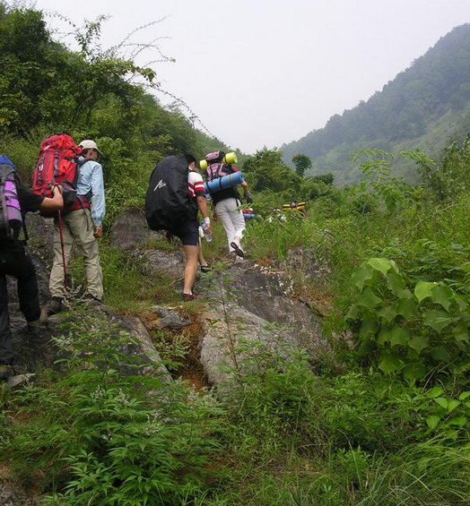
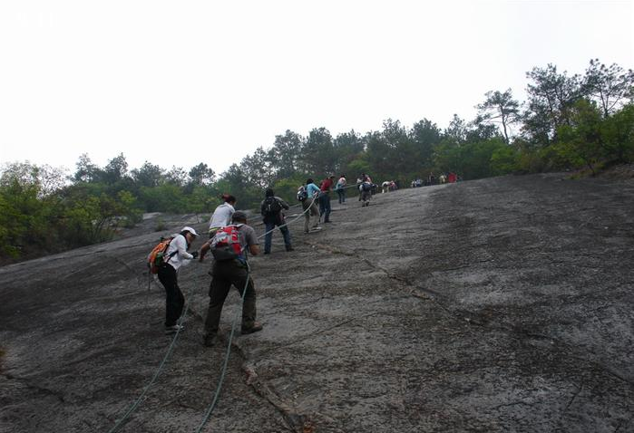
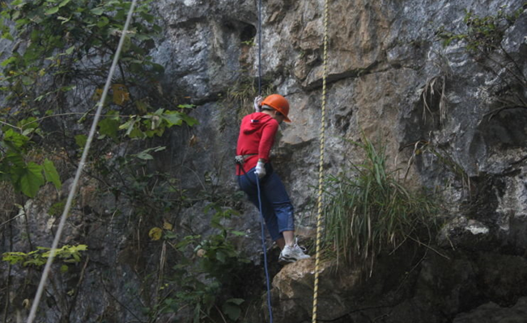

发信人: MrYang (our2008), 信区: outdoor
标 题: ○ 野外生存协会2013年出行活动第二弹~纪龙山
发信站: 饮水思源 (2013年03月16日00:05:00 星期六)
浙江桐庐纪龙山，与全国四十佳旅游胜地之一“瑶琳仙境”隔江相望，与天斗地漏景区相
通，垂云通天河相连。纪龙山为典型喀斯特地貌，海拔818米，景区内常年云蒸雾绕，怪石
嶙峋，险象环生；有镇妖柱、镇妖锁、古寺庙遗址、古台阶、古村落、云海日出、豹子崖
、城门洞、卧龙洞等景点。
 screen.width - 200){this.width = screen.width - 200}">
 screen.width - 200){this.width = screen.width - 200}">
 screen.width - 200){this.width = screen.width - 200}">
登山攀岩、徒步穿越、篝火晚会、帐篷野营、溶洞探秘、高空速降、野外生存，都有可能
成为您纪龙山之行的难忘经历。
活动时间：3月22日晚七点出发，24日下午回归~
活动类型：徒步&登山&探洞&速降&篝火&烧烤
活动强度：中等偏下，难度等级**（满级六星）适合新手 。
出行装备：
必备：背包，防潮垫，睡袋，炉头气罐锅（协会可出租）头灯/手电（自备或团购）
可选推荐：户外鞋，冲锋衣，登山杖等
食物：2顿一冷一热早餐+1顿冷午餐，分组自行采购
第二天晚烧烤食物营地提供，可自行稍微补充（建议每组稍微准备点应
急食物，以防半夜饥饿难耐哦）
费用：
总计：会员：325/人非会员：355（多退少补）
营地费用(速降+营地租金+溶洞探险+篝火费用+向导费用+营地保险+烧烤+第三天中餐）：
125元/人
装备费用：50元/人
户外险：10/人
车费：130/人
多退少补
队伍组成：
成员总人数：34人（包括领队等）
领队：冯晓远 压队：杨瑞
副领队：石鑫栋
整支队伍分成5+1队
活动行程：
第一天
18:30—18:40 于庙门集合，调整装备
19:00—19:20 出发前往浙江桐庐瑶琳仙境目的地。（车上做自我介绍及破冰游戏，补充睡
眠）
23:30--到达山脚，搭帐篷睡觉
第二天
06:00——07：30起床 早饭
07：30——12：00整包结束，出发开始登山，行程大约4小时。
12：00——13：30到达营地，搭帐篷，整理装备，解决午餐，小歇片刻
13：30——17：00探洞，体验黑暗中的那片静谧。
17：00——21：00回到营地休息，太阳下山了，开始晚餐吧。篝火燃起来了，篝火晚会开
始了，烧烤端上来吧……大家尽兴发挥。
21：00：看月亮、数星星、游戏狼人UNO……休息，住帐篷
第三天
6:30-8:00:爬起来吃早饭，起晚了就只能吃冷餐了
8：00-11：00：高空速降
11：00-12:00：山上腐败
12：00—14:00：步行穿越豹子崖峡谷下山
14：00：车在山脚停车场接 回上海
18：30 ：平安抵达交大
路线图：

注意事项：
1、野外活动不同于一般旅游，队员须听从领队的指挥，对于无视指挥所造成的后果自负，
严禁吸烟和擅自野外用火，登山时勿扔垃圾。
2、本次活动有探洞活动，故头灯/手电 每人必备。
3、关于速降和探洞
速降及探洞有一定的难度, 故一定的速降基础将能降低山体速降的风险，提高其趣味性。
我们会在3月20日中午在光体靠近篮球场墙壁处进行一次速降培训，原则上必须参加。现场
时提供专业教练及领队现场指导，希望每一个参与的队员都能够认真听取活动要求并完成
，不要做其他危及到团队及自身安全的行为；出发前系紧鞋带、皮带，不要穿开衫，女性
不应穿裙子，长发结辫盘起（最好戴帽子）；不要携带无关物品(一定要带的物品要放在合
适位置，防止掉落)；滑轮、D性锁扣、8字环、安全带、手套、头盔等检查妥当；如果恐高
、心脏病等疾病，将不适合参与此类户外活动；其他具体要求，将在现场教授给每一位参
与的队员，届时请仔细聆听。 探洞时，可能会接触冷水，所以记得多带一双袜子，衣服裤
子也最好多带一套，身体不适者慎重报名。
注意：为了整次出行的高效进行与完整体验，报名人员需自备头灯/手电,我们也将组织团
购,探洞是没有准备头灯的人员领队有权禁止其进行探洞活动。另外，我们将于3月20日下
午1点于光体北侧举行速降培训，原则上必须参加。
4、注意保护生态环境，尊重自然，减少对环境的污染。
5、为安全起见，组织者可据天气情况，适当改变行程
报名方式：
编辑短信 姓名+年级+性别+年级+联系方式+以前是否在野协有出行经历（如有，请注明）
+是否会员/干事 至13482372621
请留意最近协会召集短信，BBS中outdoor版，人人主页和野协召集帖。
有疑问请与冯同学联系，联系电话：18801902383
想过一个不一样的周末吗，想体验刺激的极限运动吗，那就和野协一起去纪龙山吧!!! We
are here, we are waiting!!!
报名截止时间：周日（3月17日）22点。
注：报名截止时间可能会视报名情况提前，我们会从男女比例、出行经验等方面综合考虑
选择成员，报名时间的先后顺序并非参考的唯一标准。本活动报名人数未满二十五人有可
能取消。
--
※ 来源:·饮水思源 bbs.sjtu.edu.cn·[FROM: 58.196.168.97]
|